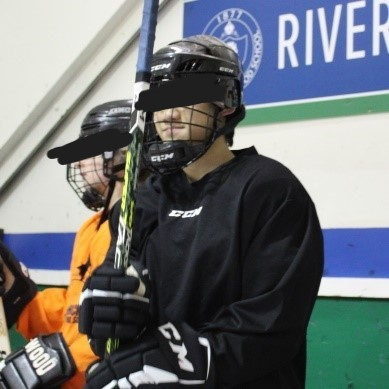
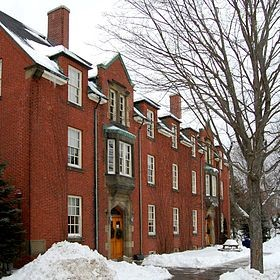

SCP-CA-003 (Family First)
Item #: SCP-CA-003
Object Class: Euclid
Special Containment Procedure: SCP-CA-003-1 and SCP-CA-003-2 (referred to as CA-003-1 and CA-003-2, respectively) are to be contained within two separate standard humanoid containment cells ███████ School, Rothesay, New Brunswick, as boarding students, until their graduation. One (1) foundation agent is to remain within the school at all times to ensure that suspicions do not arouse regarding the anomalous nature of CA-003-1 and CA-003-2. In order to mitigate the effects of SCP-CA-003 (referred to as CA-003), CA-003-1 and CA-003-2 are to be referred to, unless necessary, only as their item numbers, and never as their preferred names. Arrangements are to be made with the school board to filter the download and upload content of the internet of ███████ School, specifically the electronic devices of CA-003-1 and CA-003-2, such that information regarding CA-003 and the foundation are not released into public domain. In the case of a local public acknowledgement event, ███████ School should immediately go into lockdown and Class-C amnestic gas be released. Subsequently, the coverup story of a lockdown drill is to be implanted as an artificial memory.
Description: CA-003 is a cognitive hazard caused by an anomalous relationship between the entities CA-003-1 and CA-003-2. CA-003-1 and CA-003-2 appear to be male cousins of Asian heritage, claiming to be from Hongkong, and speak fluent English, Mandarin, and Cantonese. CA-003-2 is visibly taller than CA-003-1, although biological examination and government records show that CA-003-1 is supposedly older. CA-003-1 refers to himself as “Isaac Ho”, and CA-003-2 refers to himself as “Marcus Ho”. The anomalous nature of CA-003 is displayed when an individual (referred to as subject below) has obtained the preferred names of both CA-003-1 and CA-003-2, and has personally met both entities. After around 3 hours of their original acquaintance, the subject is affected by a cognitive hazard, as when the subject needs to identify CA-003-1, they would instead say the name “Marcus”, or the name of CA-003-2, and vice versa. This hazard is only observed when the subject can directly see the entity they wish to identify, and attempts to call them by their preferred name (“Isaac” and “Marcus”). The effect of the cognitive hazard could be mitigated with certain measures, for example, cognitive hazard prevention goggles has proven to be greatly effective in correctly identifying the entities from one another. Class C and A amnestic have proven to be the only effective methods of completely erasing the effects of the cognitive hazard, which is otherwise permanent.
History: CA-003 is first observed on ██, 2022, during a wind ensemble session at ███████ School, in which the director of the ensemble failed continuously to refer to CA-003-1 using his correct preferred name, instead referring to him as “Marcus”. CA-003 then became widespread in the next 5 years, until observed by foundation agents tasked with missions regarding CA-001 within ███████ School, who then reported the anomaly to the foundation. In the next week, class C amnestic was given to all members of the school affected by CA-003, and CA-003-1 and CA-003-2 were subsequently contained within site-CA-083.
Addendum 1: Experiment Records with CA-003-1 and CA-003-2
Experiment 003-A
Subject: D3194
Supervisor: Dr. Steven Li
Notes: D3194 was introduced to both CA-003-1 and CA-003-2. After 3 hours, D3194 failed to recognize CA-003-1 and CA-003-2. Class C amnestic was administered, and cognitive hazard prevention goggles were equipped by D3194, who then successfully identified CA-003-1 and CA-003-2 using their preferred names. Class A amnestic was then administered.
Experiment 003-B
Subject: D3194
Supervisor: Dr. Steven Li
Notes: D3194 was introduced to both CA-003-1 and CA-003-2. After 3 hours, D3194 was told to recognize CA-003-1 using his preferred name, and that failure to do so would result in immediate execution. One (1) armed guard accompanied D3194. D3194 still failed to recognize CA-003-1 and instead answered “Marcus”. D3194 was shot with a hypodermic needle filled with a tranquilizer, and was administered class A amnestic.
Experiment 003-C
Subject: D3194
Supervisor: Dr. Steven Li
Notes: D3194 was introduced to both CA-003-1 and CA-003-2. After 3 hours, D3194 was given memory-enhancing medicine, and was instructed to recognize CA-003-1 using his preferred name. D3194 failed to recognize CA-003-1. Class A amnestic was administered after the experiment.
Experiment 003-D
Subject: D3194
Supervisor: Dr. Steven Li
Notes: D3194 was introduced to both CA-003-1 and CA-003-2. After 3 hours, D3194 was told to recognize CA-003-1 using his preferred name. He successfully recognized CA-003-1.
Closing Statement: Repeated process of recognition and amnesia has proven to be effective in combatting CA-003. Further experimentation needed to confirm this causal connection.
-Dr. Li
Addendum 2: Relevant Photos
2.1:

CA-003-1, in hockey gears.
2.2:
███████ School, Rothesay, NB
2.3:

Residence of CA-003-1 and CA-003-2
-2022.11.23，Rothesay NB，Tony Su
Click Me For Document Download as .docx File